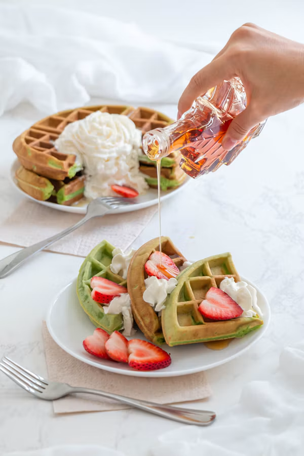

Brunch menu
The same menu at both locations, served Tuesday to Sunday, 9 am to 1:30 pm.
V Vegetarian
GF Gluten-free
DF Dairy-free
N Contains nuts
SF Contains shellfish
Our kitchen handles nuts, gluten, dairy and shellfish. Add any allergies when you book, in the Dietary needs step, and the kitchen will prepare.